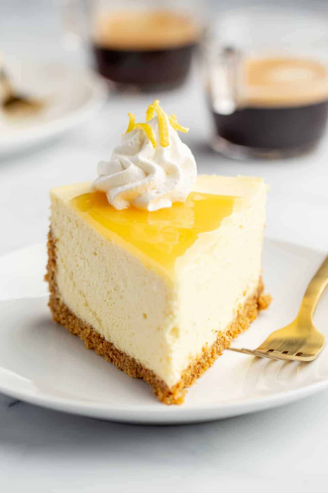

Lemon Cheeseacke

Description
Tart Lemon Cheesecake sits atop an almond-graham cracker crust to add a delightful nuttiness to the traditional graham cracker crust. Finish the cheesecake with lemon curd for double the pucker!
Ingredients
For the Crust
1 ½ cups graham cracker crumbs
½ cup Bob’s Red Mill® Super-Fine Natural Almond Flour
3 tablespoons sugar
6 tablespoons butter melted
For the Cheesecake
1 cup granulated sugar
Zest of 2 lemons
32 ounces cream cheese room temperature (4 [8-ounce] packages)
4 large eggs room temperature
2 teaspoons pure vanilla extract
¼ cup freshly squeezed lemon juice
⅓ cup heavy cream
For the Topping
1 cup lemon curd
whipped cream optional
lemon slices optional
Steps
- Preheat oven to 350°F. Separate a 9-inch springform pan into two pieces. Line the bottom of the pan with foil, fasten on the side piece, and spray the inside of the pan with nonstick cooking spray. Tightly wrap the outside bottom and sides of the springform pan with two layers of heavy duty foil. This step prevents leaks when using a water bath. I also take the extra step of placing the foil wrapped spring form pan inside an oven bag while baking, but this is optional.
- Combine the crust ingredients in a medium bowl and stir until the ingredients are evenly distributed.
- Spoon the crumbs into the prepared pan and press into the bottom of the pan and up the sides to form a crust layer. Bake crust in preheated oven for 10 minutes. Remove pan to a cooling rack.
- Bring a kettle of water to boil for the water bath.
- In a medium bowl, use your fingertips to combine the sugar and lemon zest until the sugar is fragrant.
- In the bowl of a stand mixer fitted with the paddle attachment, or in a large bowl with an electric mixer, beat cream cheese and lemon-sugar for about 2 minutes. Scrape down the sides of the bowl and mix for an additional 30 seconds. Add in eggs, one at a time, scraping down the sides of the bowl after adding the second and fourth egg. After adding the final egg and scraping the sides of the bowl, mix again for 30 seconds. The mixture should be smooth and creamy. Add in the vanilla, lemon juice, and heavy cream and mix for an additional 30 seconds.
- Pour the cheesecake filling over the crust.
- Place pan into a larger pan (I use a roasting pan) and pour boiling water into the larger pan until halfway up the sides of the cheesecake pan. Gently lay a piece of foil over the pan – do not tighten the foil as we’ll want to allow the air to still circulate.
- Bake 55-65 minutes, the edges will appear to be set, but the center will still have some jiggle to it. At this point, turn off the oven, and leave the oven door cracked. Allow the cheesecake to rest in the cooling oven for one hour.
- After one hour has passed, carefully remove the cheesecake from the water bath and place on a cooling rack to cool completely. Once the cake is completely cooled, place it into the refrigerator for at least 8 hours.
- Just before serving, top the cheesecake with lemon curd, whipped cream and lemon slices.